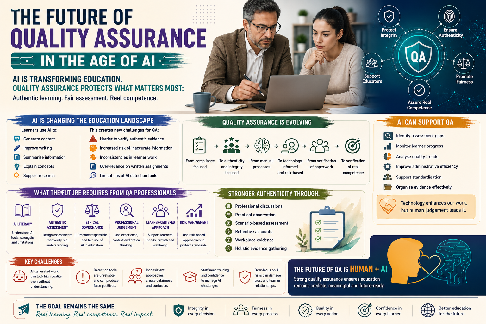

Artificial Intelligence is transforming education rapidly, but strong quality assurance remains essential for protecting authenticity, fairness, competence, and the long-term value of qualifications.

Artificial Intelligence is rapidly changing the educational landscape. Across schools, colleges, universities, and vocational training environments, AI-powered systems such as ChatGPT, Microsoft Copilot, and Gemini are increasingly influencing how learners study, how educators teach, and how assessment evidence is created.
As this transformation continues, educational institutions are facing an important challenge:
Historically, Internal Quality Assurance focused heavily on assessment consistency, compliance, sampling, documentation, standardisation, and verification of assessment decisions.
While these responsibilities remain essential, the rise of AI is significantly expanding the role of educational quality assurance.
Today, learners can use AI systems to generate assignments, improve academic writing, summarise information, create technical explanations, and structure responses professionally.
In many situations, AI-generated work can appear academically strong even when the learner has limited understanding of the subject itself.
These approaches allow quality assurance professionals to evaluate learner understanding more effectively while reducing over-reliance on polished written submissions alone.
Modern IQAs increasingly need to monitor additional authenticity risks such as:
This does not mean educational providers should automatically assume misconduct whenever AI is suspected. Overly aggressive approaches may create unfairness, distrust, and fear-driven learning environments.
Another critical challenge facing the sector is the growing need for AI literacy among educational professionals.
Many assessors, tutors, and IQAs are now expected to manage AI-related challenges without receiving sufficient training or guidance.
Artificial Intelligence itself may also support quality assurance operations positively when used responsibly.
AI-assisted systems may help educational providers:
For example, AI may help identify incomplete mapping across assessment criteria or highlight inconsistencies in feedback patterns across learner groups.
AI systems may process information efficiently, but human judgement remains essential because educational quality assurance involves ethics, fairness, communication, safeguarding, professional understanding, and interpretation of human behaviour.
The future of quality assurance will likely involve collaboration between technology and human expertise rather than complete automation.
Educational organisations that succeed in the future are unlikely to be those that simply adopt the most advanced AI tools. Success will belong to institutions that combine:
Artificial Intelligence will continue transforming education rapidly, but strong quality assurance remains essential for protecting fairness, authenticity, learner credibility, and the long-term value of qualifications themselves.
The future of QA is not about resisting technology entirely. It is about ensuring education continues to measure genuine understanding, competence, critical thinking, and professional capability within increasingly digital learning environments.